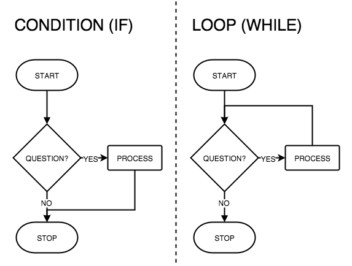

For what?

Syntax
while (condition) {
//code block to be executed
}Example
while(confirm("Do you want a kiss?")) {
document.getElementById("cheek").innerHTML +="KISS ";
}Syntax
for (initialization; condition; afterthought) {
//code block to be executed
}Example
for(var i=0; i<100; i++) {
document.getElementById("cheek").innerHTML +="KISS ";
}How to choose?
How to avoid them?